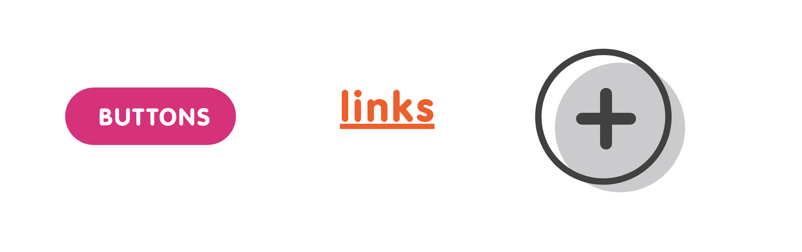

Snack4 snack
Snack 4 snack is a concept application. I created as a personal project while being furloughed due to COVIT-19. Designed to keep you up to date with the snacking options at your office.
Users are upset when they don't feel like eating the office snacks they brought. Going around the office from desk to desk asking colleagues, what snacks they got today can be time-consuming.
Feed a hungry coworker.
Snack 4 snack is an application where users can find available snacks at the office and who is willing to trade-off.Â
Ideation and sketches
User flow
Sitemap
Final prototype & style guide
I created this project my own entertainment while being furloughed. I sketched and used Adobe Illustrator to finalize the logo the prototype is built in Adobe XD
Timeline: 2 Weeks
Sketches & Ideation
For the logo, At first I was insipred by the cookie monster. I was sure the friendly survice needed a friendly face, but through moodboarding and reserached I focused on a whale type creature. To me, the whale is the ultimate snacker. Never sitting down for a meal, he snacks all day on krill and small schooling of tiny fishes.


User Flow
The flow is simple and to the point. It mapping all the posible actions:
- Listing a snack
- Trading a snack for a snack
- Adding and creating groups
- Adding members to a group
Sitemap
Application sitemap
Final Prototype
Log in
Offer a snack for a snack


List a snack for a snack
Join a group and add people
Design System
Logo
For the logo, At first, I was inspired by the cookie monster, and I was sure the friendly service needed a friendly face, but through mood boarding and research, I focused on a whale type creature. To me, the whale is the ultimate snacker. Never sitting down for a meal, he snacks all day on krill and small schooling of tiny fishes.
Colors
In color psychology, it is understood that red makes you hungry. Since we are only snacking here, I focus on vibrant orange and pink two colors that are very close to red.
Typography
VAG Rounded is a sans serif font family with slightly rounded corners. We chose it specifically for that feature. We wanted a softer friendlier font that could also appear serious, with a variety of weights.
Controls
The elements and controls have delicious candy-like appeal
Cards
Cards are friendly and smooth